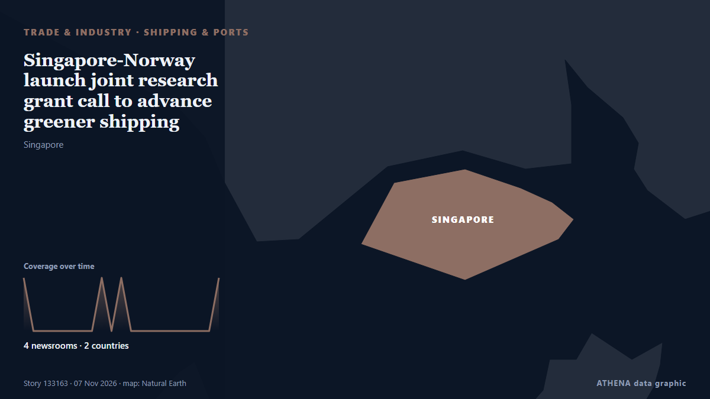

الشحن والموانئ
برعايةبرعاية  Cybernetics and Artificial Intelligence Lab Welcome to the Cybernetics and Artificial Intelligence Laboratory, established at the Department of Business Administration of the National and Kapodistrian University of Athens. The lab is headed by Professor Dimitrios Thomakos. The lab aims to do research that can be published in top venues. Our research uses tools and methods of Artificial Intelligence, and lies in the following areas: - Forecasting - Decision making - Cyber security - Finance We are always looking forward to collaborating with exceptional students!
Cybernetics and Artificial Intelligence Lab Welcome to the Cybernetics and Artificial Intelligence Laboratory, established at the Department of Business Administration of the National and Kapodistrian University of Athens. The lab is headed by Professor Dimitrios Thomakos. The lab aims to do research that can be published in top venues. Our research uses tools and methods of Artificial Intelligence, and lies in the following areas: - Forecasting - Decision making - Cyber security - Finance We are always looking forward to collaborating with exceptional students!
| 25 أكتوبر | 0 |
|---|---|
| 26 أكتوبر | 0 |
| 27 أكتوبر | 0 |
| 28 أكتوبر | 0 |
| 29 أكتوبر | 0 |
| 30 أكتوبر | 0 |
| 31 أكتوبر | 0 |
| 1 نوفمبر | 2 |
| 2 نوفمبر | 3 |
| 3 نوفمبر | 3 |
| 4 نوفمبر | 5 |
| 5 نوفمبر | 9 |
| 6 نوفمبر | 1 |
| 7 نوفمبر | 0 |
تُعرض العناوين بالإنجليزية كما نُشرت.

Singapore-Norway launch joint research grant call to advance greener shipping
The Maritime and Port Authority of Singapore (MPA), the Research Council of Norway (RCN) and the Singapore Maritime Institute (SMI) have launched a joint research grant call to develop solutions to… من Ship.Energy
Spanish submarine sinks retired patrol vessel in live-fire exercise (VIDEO)
The Spanish Navy’s S-81 submarine Isaac Peral has sunk the decommissioned offshore patrol vessel Infanta Elena with a single torpedo during the... من Naval Today
France extends maritime patrol plane's stay in Black Sea after cargo ship attacks
MIHAIL KOGALNICEANU, Romania, Nov 5 - A French maritime patrol aircraft deployed to Romania to bolster surveillance after a series of deadly strikes on merchant ships in the Black Sea on the edge of… من The Straits Times
Tanker struck by 2 unidentified projectiles off Qatar coast: UK maritime agency
Incident reported 50 nautical miles north of Madinat ash Shamal, with crew condition, vessel damage and environmental impact yet to be confirmed. من Anadolu Agency (English)
Iran's IRGC says two tankers and tugboat caught fire in Strait of Hormuz
Iran’s Islamic Revolutionary Guard Corps said on Thursday that two oil tankers and a tugboat had caught fire in separate incidents after attempting to use unauthorised routes through the Strait of… من Business Recorder
Hapag-Lloyd passes 1m teu in Africa and targets 1.7m teu by 2030
Hapag-Lloyd's African volumes have crossed 1m teu, the carrier said as it marked 20 years in South Africa. من Container Magazine
Iran Exempts India And China From Hormuz Restrictions. Why It Matters
The arrangement is significant for India given its dependence on the Middle East for energy supplies and its wider trade interests in the region. من NDTV
India joins ISF Verify initiative for digital seafarer certification
India has joined the ISF Verify initiative, marking a significant step towards the wider adoption of digital seafarer certification across the global shipping industry. من Container News
LR Report Finds Alternative-Fuel Vessels Outpace Port Readiness
Alternative-fuel vessel orders are outpacing the development of the port infrastructure needed to support them, according to a new global study by Lloyd’s Register (LR)… من Maritime Professional
Report: South Korea's anti-piracy unit to expand operations closer to Hormuz Strait
SEOUL, Nov. 5 (Yonhap) -- South Korea plans to expand its anti-piracy mission of... من Yonhap (English)
Iran allows Indian, Chinese ships to transit Hormuz
Iran has exempted Indian ships from the restrictions it imposed on passage through the Strait of Hormuz, along with vessels from China, Iraq, and Qatar, a senior Iranian lawmaker has said. من The Island
Greece, Cyprus, Israel Again Voice Rejection of Turkey-Libya Maritime Deal
A trilateral meeting in Athens focused on maritime security, defense industry cooperation and regional threats, with the three countries challenging the legal validity of the Turkey-Libya memorandum… من To Vima (English)
Iran protests IMO’s biased reports on shipping security
London, IRNA – The Islamic Republic of Iran has criticized the International Maritime Organization (IMO) biased reports on the shipping crisis, stressing that seafarer protection should not be… من IRNA (English)
Israeli cruise ship Crown Iris left Syros island after a false bomb threat
Coast Guard cites potential threats to public order, island’s economy. من Anadolu Agency (English)
Windward expands into Maritime Visual Intelligence with acquisition of Azimut.ai
The newly added sensing layer identifies and fingerprints vessels in real time at maritime chokepoints and ports, enabling the visibility. من Cyprus Shipping News
Chile maintains environmental approval for San Antonio Outer Port
Chile’s Committee of Ministers has maintained the favourable environmental approval for the US$4 billion San Antonio Outer Port project. من Container News
NAVTOR introduces real-time AIS streaming in NavFleet platform
Maritime technology company NAVTOR has introduced real-time AIS streaming to its NavFleet platform, allowing fleet managers to monitor vessel positions, movements and surrounding traffic with minimal… من MarineLink
Somali Pirates Hijack Iranian Dhow, Marking Fourth Off Somalia in 2026
On October 29, 2026, a Somali Pirate Action Group of 12 armed pirates hijacked the Iranian fishing dhow AZINI approximately 185 nautical miles east of Bandarbeyla, Puntland. من MarineLink
International Transport Employees Federation Formed In India To Protect Seafarer Rights
Indian maritime unions and welfare groups establish ITEF in Chennai to strengthen seafarers’ rights, safety and welfare. من Marine Insight